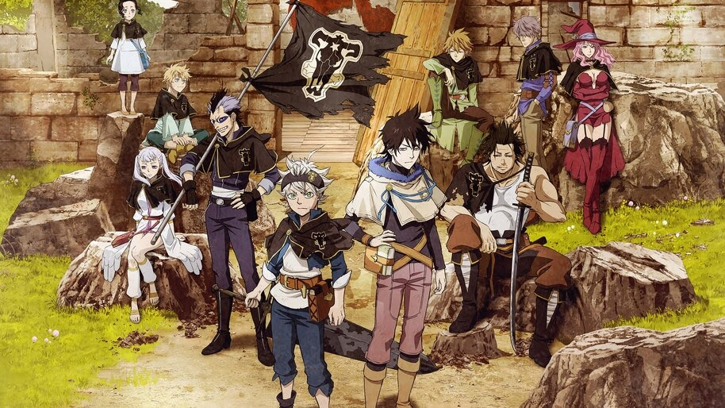

About Asta
Asta is an orphan who wants to become the Wizard King, but he needs to become a Magic Knight first then rise in ranking to become the Wizard King.
Asta's Characteristics
- He has Anti-Magic power
- He is a commoner
- He's very strong
Asta's Friends
Asta has amazing and wonderful friends. His best friend is Noelle, she's stubborn but kind. Click on the links below to read more about them.